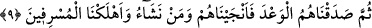
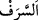

9. Sonra onlara (verdiğimiz) sözü yerine getirdik; böylece, hem onları hem de
dilediğimiz (başka) kimseleri kurtuluşa erdirdik; müsrifleri de helâk ettik.
“Sonra onlara verdiğimiz sözü yerine getirdik.” Burada sanki şöyle buyrulmuştur:
Ona vahyedeceğimizi vahyettik, sonra düşmanları helâk ederek vahyi çoğaltma
konusunda onlara verdiğimiz sözü yerine getirdik.
“böylece, hem onları hem de dilediğimiz (başka) kimseleri kurtuluşa erdirdik;”
Yâni mü’minlerden ve ileride kendisi veya neslinden bir bölümü îman edecek olanlar
gibi ilâhî hikmetin geride bırakılmalarını gerektirdiği diğer kimselerden istediklerimizi
kurtardık. İşte Arapların tamamen yok edici bir azaba uğratılmaktan korunmalarının sırrı
da budur.
Fakir (Bursevî) der ki: Âyette “hem onları hem de dilediğimiz (başka) kimseleri
kurtuluşa erdirdik” buyruldu. Zâhir olan o ki buradaki “dilediğimiz” sözü ile
mü’minler kastedilmiştir. Âyet, önceki peygamberler ve ümmetleri hakkındadır. O
ümmetlerin azâbı da tümüyle helâk şeklinde olmuştur. Onlardan mü’min olanların
başkası kurtulamamıştır. Nitekim Allah Teâlâ şöyle buyurmaktadır: “Sonunda
elçilerimizi ve inananları kurtarırız.” (Yûnus, 10/103) Araplar ise tamamen yok edici
bir azaba uğratılmaktan korunmuş olduklarından onlardan kendisi veya neslinden bir
bölümü îman edecek kimselerin Bedir gününde olduğu gibi geride kalması uzak bir
ihtimal olmadı. Anla.
“Müsrifleri de helâk ettik.” Küfür ve isyanda haddi aşanları alçaltıcı bir azaba
uğrattık.
Râgıb şöyle der: “, her ne kadar harcama konusunda daha meşhur olsa da
insanın yaptığı her türlü işte haddi aşmasıdır.
[141]. Bu özellikler zâten kendilerinde bulunması gereken meziyyetlerdir. Bulunması
bir üstünlük değildir.